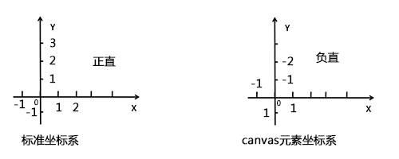
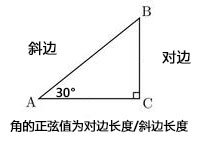
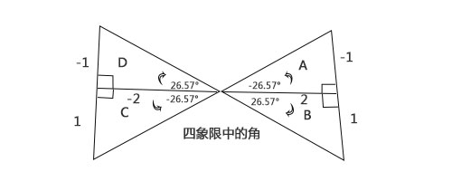

角
角与弧度关系
在衡量角的大小的时候，计算机更倾向于计算角的弧度，角度与弧度转换关系：
radians = degrees*Math.PI/180;
degrees = radians*180/Math.PI;
canvas坐标系

正弦

console.log(Math.sin(30))
输出结果为-0.988，与0.5相差较大，正确应将角度转换为弧度
console.log(Math.sin(30)*Math.Pi/180)
反正切

console.log(Math.atan(0.5)*180/Math.PI)
打印结果为26.56505117707799°，此类正切值无法判断是B象限还是D象限,
onsole.log(Math.atan2(1,2)*180/Math.PI)
此类正切值可以判断是B象限还是D象限,